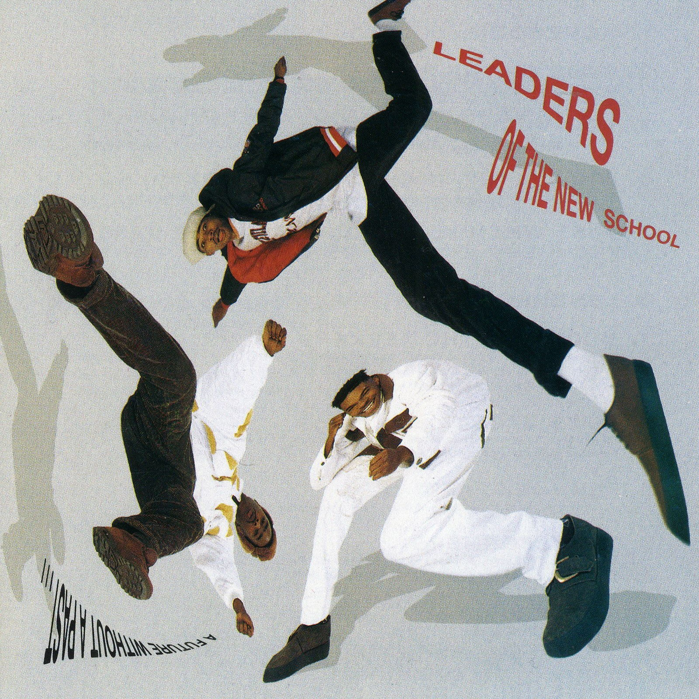

CRVI000420
Leaders Of The New School - A Future Without A Past...
|||
Designer unknown · Elektra · 1991
info
close
←
→

#Leaders Of The New School
#album cover
#Elektra
#1990s
#blue
#alltags
all
rights & use